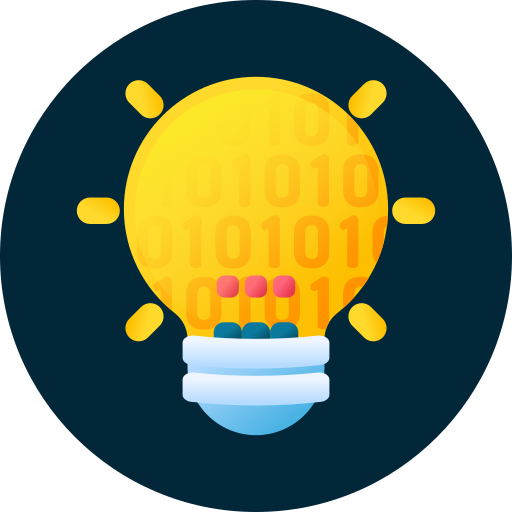

I love learning!
And I'm working hard.

a programmer.
Maybe not yet.
One day i'll get there...
And I'm working hard.
Programming is like solving a puzzle for me. It's fun, it's interesting, it's engaging and challenging. I can easily spend hours coding and feel like minutes have passed.
My journey learning to program started in college, when I was 18 years old. First semester into my Electrical Engineering undergraduate program, among calculus, physics, chemistry and some other introductory classes, there it was: an introductory class to algorithms and programming with Portugol and C. It was my first contact with this world.
I'm often asked though, what does my Major have to do with programming and Computer Science? Well, of course there's a slight focus on the electrical parts of everything instead of just the software. But, not only we learn to code in the first couple of semesters, we also learn about how computers work, how they comunicate, hardware, among other things. I even had some projects with Arduino and tinkering with robotics as well.
One example of something I studied in my Major is how leds work: we were taught some of the theory and studied the parts it's made of, we got to know the voltage necessary to turn it on and to burn it out. And, in addition, we programmed an arduino to get the necessary voltage to turn it on when it should be turned on. As a project, our class tried to use that knowledge make an automated house mockup.
Though I learned a bit of Portugol, C and programming in MATLAB and Scilab in the first half of my college career, what really hooked me in was Python. My first project with it was around my 6th semester of college: a "calculator" with Tkinter. I programmed for 10 hours straight, through the night. I couldn't sleep even if I wanted, it was so much fun and interesting I couldn't believe it.
By the beginning of my 9th semester I started learning about A.I., Machine Learning, Artificial Neural Networks, etc. I've always loved maths, and my mind was blown away by how calculus and matrices were being used here. I couldn't help but to choose this subject as my final project for my major. In short, I collected and organized data (four thousand radiographies and their annotations), trained a few Convolutional models with Tensorflow and reported my findings making a parallel with the state of the art. It was wondrous!
Through all that, I also did a lot of online courses. One obviously won't learn everything in college. So I did a few certified specializations in Coursera when they started "Coursera for Students". And that's about when I started to learn and understand Object Oriented Programming. Later, this knowledge was essential to solving a few programming problems in my C.S. Master's degree.
Nowadays OOP is ingrained in my mind after learning and doing some projects with C#, Windows Forms, SQL, etc. I'm involved in quite a few projects: some are personal and I'm working by myself, while some others are other people's ideas and I'm working with them. So I'm getting experience working in teams too. Check out my GitHub page to see my C# projects!
I also am learning HTML5/CSS3 and JS. And this website is your proof: I wrote it from scratch! Pretty nice looking, don't you think? I did my best to make it as responsive as possible. It should look nice in computers in whatever size you put the window and also in most smartphones and tablets too. Try it out!
Of course, among everything I've been learning, I also learned a bit about software versioning with GitHub! If you're here, you've probably already seen some links to my GitHub page around. I have a goal of getting a whole year worth of green squares in my contribution activity, as doing at least one contribution a day forces me to code everyday. It has been fun so far!


Finally, considering my love for maths, programming and my unwavering interest in AI, I felt compelled to pursue a Master's Degreee in Computer Science, researching AI, as soon as I got my undergraduate degree. My learning career is unstoppable now with this graduate program in addition to the many online courses and projects I'm working on!